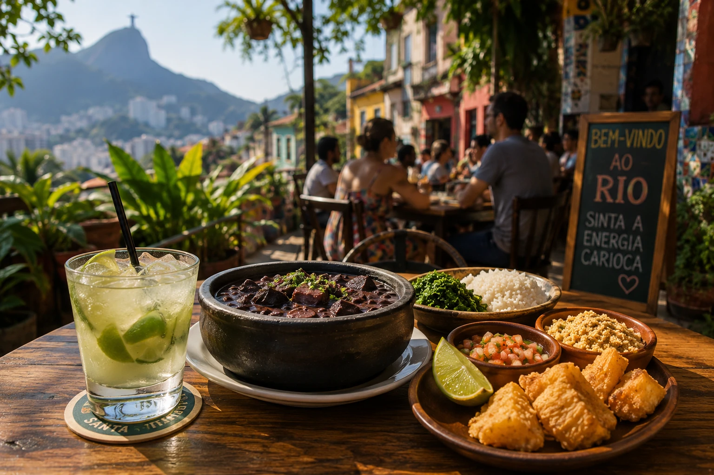
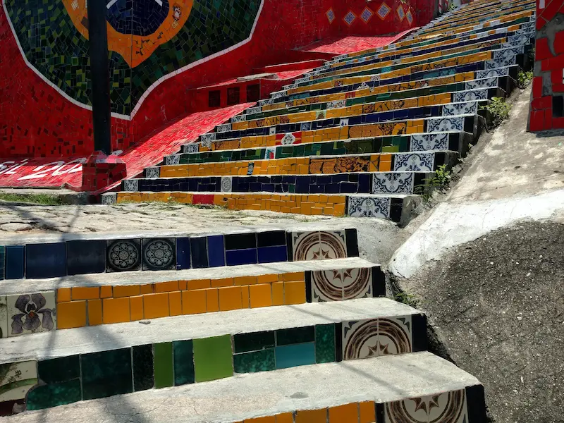
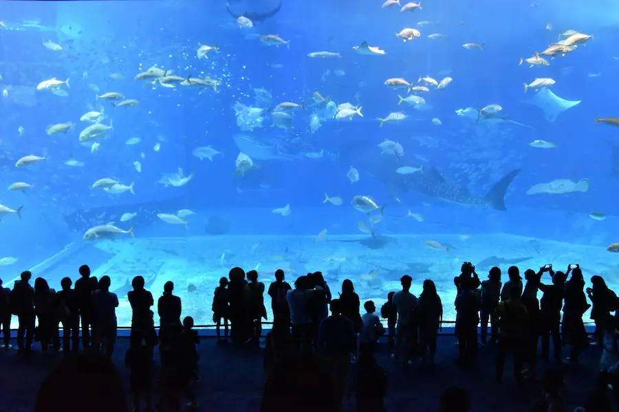

Rio, entre océan et montagnes
Découvre Rio de Janeiro entre Copacabana, Ipanema, le Christ Rédempteur, ses quartiers colorés et son énergie carioca unique.
Copacabana • Ipanema • Christ Rédempteur • Pain de Sucre • Samba
Profite de Copacabana, Ipanema et Leblon, entre baignade, promenade et coucher de soleil.
Admire Rio depuis le Christ Rédempteur, le Pain de Sucre et les nombreux belvédères de la ville.
Samba, street art, football et cuisine brésilienne rythment les journées et les soirées.
Explore facilement Copacabana, Ipanema, le centre historique, Lapa et Botafogo grâce au métro.
Rio de Janeiro est l'une des villes les plus emblématiques du Brésil et l'une des destinations les plus spectaculaires d'Amérique du Sud. Entre océan Atlantique, montagnes couvertes de végétation et culture carioca, elle séduit par son énergie, ses paysages et son atmosphère unique.
De Copacabana à Ipanema, en passant par Santa Teresa, Lapa, Botafogo ou le centre historique, chaque quartier possède sa propre identité entre plages animées, rues colorées, bâtiments coloniaux, samba et panoramas impressionnants.
Entre le Christ Rédempteur, le Pain de Sucre, les matchs de football, les couchers de soleil, la gastronomie brésilienne et la vie nocturne, Rio offre une expérience intense et dépaysante, entre nature, culture et art de vivre.

Au-delà du Christ Rédempteur et des plages mythiques, Rio se vit aussi depuis le ciel, l'océan, la forêt tropicale et les tribunes du Maracanã. Ces expériences révèlent toute l'intensité et la diversité de la ville.
Prends de la hauteur pour admirer les plages, les montagnes et les monuments emblématiques de Rio depuis le ciel lors d'un vol privé spectaculaire.
Réserver le survol →Élance-toi au-dessus de la forêt et du littoral avant d'atterrir près de la plage. Une expérience vertigineuse offrant un panorama exceptionnel sur Rio.
Vivre l'aventure →Navigue dans la baie tandis que la lumière dorée enveloppe le Pain de Sucre, les montagnes et les paysages de Rio, avec des boissons servies à bord.
Réserver la sortie →Pars à pied au cœur de la forêt tropicale pour rejoindre sommets, grottes et cascades, à seulement quelques kilomètres des quartiers animés de Rio.
Découvrir la randonnée →Plonge dans la ferveur du football brésilien et découvre l'ambiance incomparable de l'un des stades les plus mythiques au monde.
Réserver l'expérience →Profite d'une soirée mêlant dîner, musique, danse et costumes pour parcourir les différentes facettes de la culture brésilienne dans un décor spectaculaire.
Découvrir le spectacle →Relève le défi d'une randonnée jusqu'à l'un des sommets les plus impressionnants de Rio et profite d'une vue spectaculaire sur la forêt, la ville et l'océan.
Réserver la randonnée →Monte sur une planche de stand-up paddle et découvre la baie de Copacabana dans une atmosphère paisible, au lever ou au coucher du soleil.
Réserver l'activité →Métro, Uber, vélo ou transfert privé : découvre les solutions les plus pratiques pour rejoindre les plages, les quartiers emblématiques et les principaux sites de Rio de Janeiro.
Le métro est le moyen le plus simple pour rejoindre Copacabana, Ipanema, Botafogo, Flamengo, le centre-ville ou Barra da Tijuca tout en évitant les embouteillages. Il est moderne, sûr et très pratique pour les voyageurs.
Découvrir le réseau →Uber est très utilisé à Rio pour rejoindre Santa Teresa, Lapa, le Christ Rédempteur ou encore le Pain de Sucre. Les trajets restent généralement abordables et permettent de circuler facilement entre les principaux quartiers.
Ouvrir Uber →Grâce au réseau Bike Itaú, parcours les pistes cyclables reliant Copacabana, Ipanema, Leblon ou la lagune Rodrigo de Freitas tout en profitant des magnifiques paysages de Rio.
Louer un vélo →Après ton arrivée à l'aéroport international Galeão, profite d'un transfert privé confortable jusqu'à ton hôtel sans attendre un taxi ni utiliser les transports en commun.
Réserver le transfert →Plages mythiques, quartiers élégants ou ambiance artistique : choisis le secteur qui correspond le mieux à ton séjour et à ta manière de découvrir Rio.
Le quartier le plus emblématique de Rio pour un premier séjour. Sa longue plage, ses nombreux hôtels, ses restaurants et son accès au métro permettent de profiter facilement de la ville, de jour comme de nuit.
Un quartier élégant et animé, réputé pour sa plage, ses couchers de soleil, ses cafés et ses boutiques. Une excellente option pour séjourner dans une atmosphère plus chic tout en restant proche des principaux sites.
Plus calme et résidentiel qu'Ipanema, Leblon séduit par son ambiance haut de gamme, ses bonnes adresses et sa plage agréable. Un choix idéal pour les couples, les familles et les voyageurs en quête de confort.
Perché sur les hauteurs, ce quartier bohème est connu pour ses maisons colorées, ses ateliers d'artistes, ses vues sur la ville et ses petites adresses de charme. Une option originale pour découvrir un autre visage de Rio.
Un quartier pratique et souvent plus abordable, offrant une belle vue sur le Pain de Sucre. Son métro, ses restaurants et sa position centrale permettent de rejoindre facilement Copacabana, le centre et les principaux monuments.
Compare les hébergements dans les meilleurs quartiers de Rio de Janeiro.
Churrasco, feijoada, fruits tropicaux, caïpirinha, botecos traditionnels et restaurants panoramiques : Rio de Janeiro offre une gastronomie aussi généreuse que sa culture.

Véritable institution de Copacabana, cette churrascaria est réputée pour ses viandes grillées servies à volonté selon la tradition brésilienne.
Découvrir le restaurant →Perché sur les hauteurs de Santa Teresa, Aprazível offre l'une des plus belles vues de Rio et sublime les saveurs brésiliennes dans un cadre tropical exceptionnel.
Réserver une table →L'un des lieux préférés des Cariocas pour déguster des spécialités locales et boire un verre face à la baie de Guanabara au coucher du soleil.
Voir l'adresse →Ouvert en 1894, ce café historique est célèbre pour son architecture Belle Époque, ses pâtisseries traditionnelles et son atmosphère élégante.
Découvrir le café →Une adresse réputée pour ses grillades brésiliennes et sa terrasse offrant une vue spectaculaire sur la baie et le Pain de Sucre.
Voir le restaurant →Restaurant emblématique du quartier d'Ipanema, rendu célèbre par la chanson « The Girl from Ipanema », où l'on découvre plusieurs classiques de la cuisine brésilienne.
Découvrir ce lieu mythique →Découvre la cuisine brésilienne autrement grâce à des visites gourmandes, des cours de cuisine et des expériences conviviales organisées par des habitants passionnés.
Parcours les meilleures adresses locales et goûte à une quinzaine de spécialités, boissons et street foods qui font la réputation de Rio.
Découvrir le food tour →Prépare plusieurs recettes traditionnelles accompagnées d'un chef local et découvre les secrets de la gastronomie brésilienne dans une ambiance conviviale.
Participer au cours →Profite d'un barbecue brésilien traditionnel sur les hauteurs de Vidigal avec une vue exceptionnelle sur l'océan et les plages de Rio.
Réserver l'expérience →Découvre les meilleurs bars de Rio, déguste plusieurs spécialités locales et plonge dans l'ambiance festive des quartiers les plus animés de la ville.
Explorer les bars de Rio →Une immersion gourmande exceptionnelle à travers les viandes, les plats traditionnels, les encas de rue, les desserts et les boissons emblématiques du Brésil.
Découvrir la gastronomie →Entre monuments emblématiques, plages mondialement connues, quartiers historiques, nature luxuriante et culture brésilienne, Rio de Janeiro offre des expériences inoubliables à vivre tout au long de l'année.
Dominant Rio du haut du Corcovado, cette statue emblématique offre l'un des plus beaux panoramas du Brésil. L'accès en train à crémaillère fait partie intégrante de l'expérience.
Réserver votre billet →Monte à bord du célèbre téléphérique et admire une vue spectaculaire sur Copacabana, la baie de Guanabara et le Christ Rédempteur.
Réserver votre billet →Deux plages mythiques où l'on profite du soleil, des terrains de beach-volley, des promenades en bord de mer et de l'ambiance unique des Cariocas.
Chaque soir, habitants et voyageurs se retrouvent sur les rochers d'Arpoador pour admirer l'un des plus beaux couchers de soleil de Rio.

Découvre le quartier bohème de Santa Teresa, emprunte son célèbre tramway et admire les mosaïques colorées de l'Escadaria Selarón.
Découvrir la visite →Explore l'un des plus beaux jardins botaniques d'Amérique du Sud avant de partir à la découverte de la plus grande forêt urbaine tropicale au monde.
Explorer la nature →Découvre les pas de danse les plus célèbres du Brésil lors d'un cours convivial animé par des danseurs locaux dans le quartier d'Ipanema.
Participer au cours →
Le plus grand aquarium marin d'Amérique du Sud accueille des milliers d'espèces dans des bassins spectaculaires, dont un impressionnant tunnel sous-marin.
Réserver votre billet →Rio de Janeiro est l'une des capitales mondiales du football. Assiste à un match dans le mythique Maracanã, découvre les grands clubs cariocas et consulte les principaux événements sportifs organisés tout au long de l'année.
Découvre l'un des stades les plus célèbres au monde, théâtre de finales historiques, de matchs légendaires et des plus grandes émotions du football brésilien.
Flamengo, Fluminense, Botafogo et Vasco da Gama font vibrer la ville toute l'année. Chaque rencontre offre une ambiance unique portée par des supporters parmi les plus passionnés du monde.
Football, marathons, courses, compétitions internationales et autres rendez-vous sportifs rythment l'année. Consulte les événements programmés pendant ton séjour.
Les rencontres et les événements varient selon la saison et les dates de ton voyage.
Depuis Rio de Janeiro, découvre quelques-uns des plus beaux paysages du Brésil. Îles paradisiaques, eaux turquoise, villes impériales et stations balnéaires permettent de prolonger ton voyage entre nature, détente et patrimoine.
Pars à la découverte d'Ilha Grande et de l'archipel d'Angra dos Reis. Cette excursion en bateau permet de rejoindre plusieurs plages paradisiaques, de nager dans des eaux cristallines et d'explorer l'un des plus beaux littoraux du Brésil.
🏝️ Explorer Ilha Grande →Surnommée les « Caraïbes du Brésil », Arraial do Cabo séduit par ses plages de sable blanc, ses eaux turquoise et ses sorties en bateau au cœur d'un environnement naturel exceptionnel.
🌊 Découvrir Arraial do Cabo →Nichée dans les montagnes, Petrópolis fut la résidence d'été de la famille impériale brésilienne. Son palais, son architecture et son climat plus frais offrent une excursion culturelle idéale au départ de Rio.
👑 Visiter Petrópolis →Réputée pour ses plages, ses criques et ses eaux transparentes, Búzios est l'une des stations balnéaires les plus prisées du Brésil. Le circuit des piscines naturelles permet de découvrir ses plus beaux paysages marins.
🏖️ Explorer les piscines naturelles →Le portugais est la langue officielle du Brésil. Dans les quartiers touristiques, certains professionnels parlent anglais ou espagnol, mais connaître quelques mots de portugais est toujours apprécié.
Le réal brésilien (BRL) est utilisé dans tout le pays. Les cartes bancaires sont acceptées presque partout, mais il reste utile de conserver un peu d'espèces pour les petits commerces.
Le métro permet de rejoindre facilement Copacabana, Ipanema, Botafogo et le centre-ville. Uber est très utilisé pour compléter les déplacements, notamment vers le Christ Rédempteur ou Santa Teresa.
Quatre à cinq jours permettent de découvrir les principaux sites de Rio. Une semaine est idéale pour profiter des plages et réaliser une ou deux excursions vers Ilha Grande, Arraial do Cabo, Petrópolis ou Búzios.
De mai à septembre, les températures sont agréables avec un temps généralement plus sec. L'été austral, de décembre à mars, est plus chaud, plus humide et très animé, notamment pendant le carnaval.
Comptez environ 80 à 220 € par personne et par jour selon la catégorie d'hébergement, les restaurants choisis et les activités réservées.
Quelques habitudes permettent de profiter pleinement de Rio tout en voyageant plus sereinement.
Évite de transporter passeport, bijoux ou sommes importantes en permanence. Privilégie uniquement l'essentiel lors de tes déplacements et profite des plages l'esprit tranquille.
Même lorsque le ciel est légèrement couvert, les UV restent puissants. Pense à appliquer régulièrement de la crème solaire et à bien t'hydrater.
Pour certains trajets, notamment en soirée ou entre des quartiers éloignés, Uber est souvent plus simple et plus pratique que la voiture de location ou les bus.
Rio ne se résume pas à sa plage la plus célèbre. Ipanema, Santa Teresa, Botafogo, le Jardin botanique ou encore le Pain de Sucre méritent largement d'être explorés.
Le Christ Rédempteur, le Pain de Sucre, les vols en hélicoptère, les matchs au Maracanã et certaines excursions affichent souvent complet pendant les périodes touristiques.
Respecte toujours les consignes de baignade et les drapeaux installés par les sauveteurs, car les vagues et les courants peuvent être puissants sur certaines plages.
Quatre à cinq jours permettent de découvrir les principaux sites de Rio. Une semaine est idéale pour profiter des plages et réaliser une excursion dans les environs.
Copacabana et Ipanema sont les meilleurs choix pour un premier voyage grâce à leur situation, leurs plages, leurs hôtels, leurs restaurants et leur accès au métro.
Oui. Dans les zones touristiques, l'anglais est souvent compris dans les hôtels, les agences et de nombreux restaurants. Quelques mots de portugais sont néanmoins toujours appréciés.
Oui. Le métro, Uber et la marche permettent de rejoindre facilement la majorité des sites touristiques sans louer de véhicule.
La feijoada, le churrasco, les pão de queijo, les fruits tropicaux, les açaís et la caïpirinha font partie des incontournables de la gastronomie brésilienne.
De mai à septembre, le climat est généralement plus sec et agréable. Pour vivre l'ambiance du carnaval, il faut privilégier les mois de février ou mars selon les années.